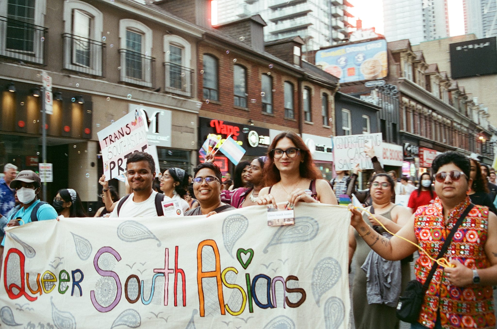

Community Outreach

Empowering Queer South Asians Through Digital Outreach & Community
Engagement.
As Web and Social Media Manager for Queer South Asians (QSA), I
lead initiatives to amplify queer South Asian voices, foster
inclusivity, and expand access to safe spaces in Toronto. I
developed and maintain QSA's official website, increasing digital
visibility by 95% in just five months and ensuring community
members can easily access events, resources, and support.
Collaborating with organizers, I design engaging social media
campaigns that have reached over 1,000 views across platforms,
driving event participation and connection. I also help coordinate
outreach strategies and fundraising efforts, raising over $5,000
to sustain free, affirming spaces where queer South Asians can
connect, celebrate identity, and thrive.

Global Encounters Camp: Kenya and Tanzania 2017.
In 2017, I took part in the Global Encounters international
programme, collaborating with the Aga Khan Development Network
(AKDN) to engage with local communities in Kenya and Tanzania. I
witnessed the resilience, talent, and spirit that drive positive
change, while contributing to efforts that uplift the communities
in which we live. As part of this experience, I worked within two
AKDN-supported institutions that provided daily care, educational
support, and encouragement to local children. This journey
expanded my perspective on global citizenship, deepened my
commitment to service, and strengthened my dedication to creating
meaningful impact across borders.